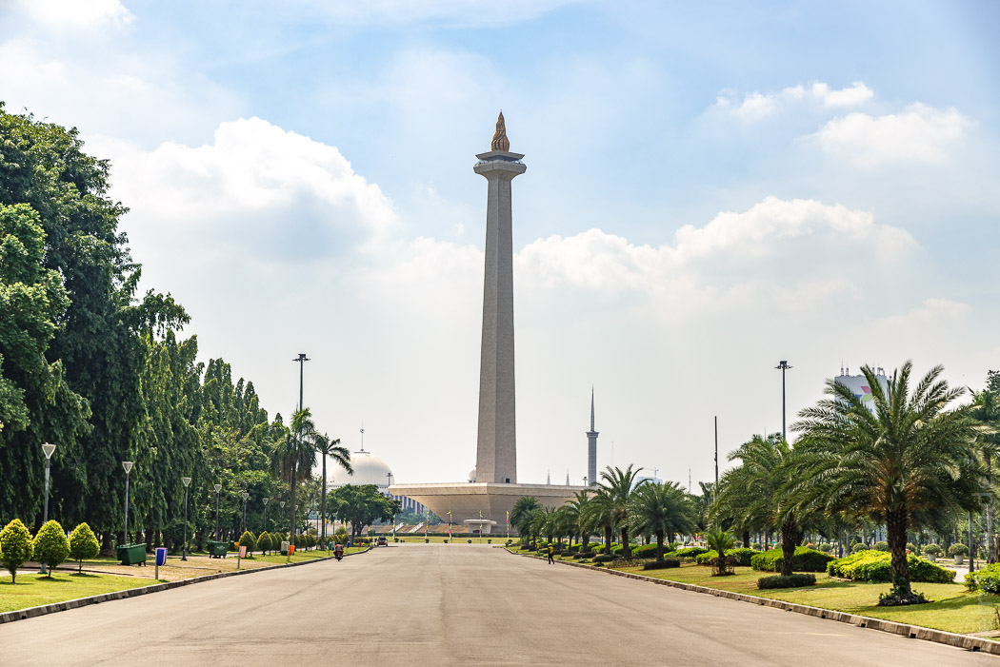
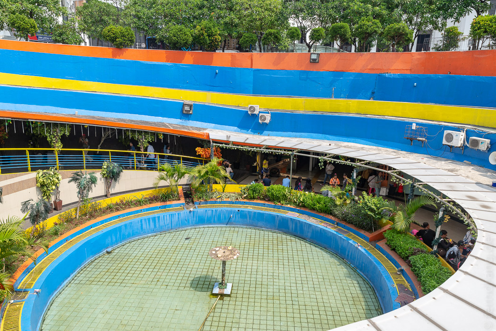
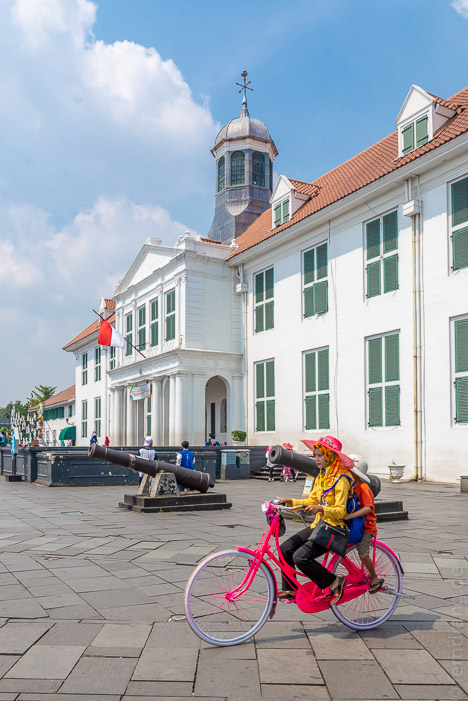

Das Frühstück hat unserem Hotel noch einen extra Stern eingebracht. Der Kaffee ist fantastisch und die Gerichte sind köstlich. Allerdings darf man es nicht eilig haben. Dasselbe gilt für einen Besuch im Reisbüro. Um einen Flug zu buchen, sind wir in die gammelige Mall auf der Ecke geschickt worden. Mit Hilfe von mehreren Wachleuten haben wir den Eingang gefunden, eine Hausumrundung gemacht und sind über Umwegen durch den Keller mit verschiedenen Aufzügen zu einem Büro im 13. Stock gelangt, wo wir dann den halben Vormittag damit zugebracht haben, unsere Namen zu buchstabieren. In solchen Situationen erweist sich jeder zusätzliche Vorname als Fluch.
Jakarta ist berühmt für seine Staus, so dass dem Transjakarta Bus, ähnlich wie in Bogota, abgesperrte Spuren gebaut wurden. Dadurch ist es fast unmöglich, als Fußgänger eine größere Straße ohne Brücke zu überqueren, und es macht wenig Spaß zu Fuß unterwegs zu sein. Wir wollten das Monas (Monument Nasional) ansehen, ein riesiger Obelisk mit Aussichtsplattform. Aber die ganze Anlage ist montags geschlossen. Überhaupt sollte sich Montag als ein ganz schlechter Tag für Jakarta herausstellen, denn dann ist alles geschlossen. Vom Bus aus offenbarte sich uns die ganze Hässlichkeit Jakartas: Monströse Straßenzüge mit heruntergekommenen Hochhäusern und atemberaubend unansehnlichen Einkaufskomplexen. Vor allem die Dimensionen erschrecken, die Stadt hat Elefantitis im Endstadium.

In der Altstadt gibt es ein holländisches Kolonialgebäude an einem netten Platz mit alten Kanonen und neuen Cafés, der auch eine Plaza Bolivar sein könnte. Nachdem wir es aus dem spiralförmigen, dreistöckigen Labyrinth, das die Bushaltestelle vom Bürgersteig trennt, geschafft hatten, fanden wir uns in der vielleicht einzigen Fußgängerzone der Stadt wieder. Es wimmelte nur so von Einheimischen, die sich hier mit ihrem kolonialen Erbe auseinander setzen, indem sie auf bunten Hollandrädern auf dem Platz im Kreis fahren. Die Frauen tragen dazu Strohhüte mit Blumen über den Kopftüchern und die Kinder Tropenhelme. Die Männer halten die Pirouetten mit dem Handy fest. Dieser eigenwillige Spaß geriet aber schnell ins Hintertreffen, als wir den Platz betraten. Niemand wollte ohne ein Selfie mit Ausländern nach Hause gehen. Wir werden in einem Dutzend Fotoalben landen. Aber es war schwer nein zu sagen, da alle so begeistert waren. Den wenigen anderen Touristen ging es genauso.


Den Rest des Tages haben wir erfolglos damit verbracht eine zweite Sehenswürdigkeit zu finden. Aber leider blieb es beim Singular. Wir haben ein paar frischere Hochhäuser gesehen. Im etwas gediegeneren Stadtteil Mentang sind wir an hoch eingemauerten Villen mit großen Gärten vorbeigekommen. Nach einer Rast in einem Park haben wir ein hübsches Café gefunden und uns für den Abend ein traditionelles indonesisches Restaurant gesucht, das auch als Tempel oder Antiquitätenhandel weitermachen könnte, wenn die (sehr gute) Küche mal ausfällt.